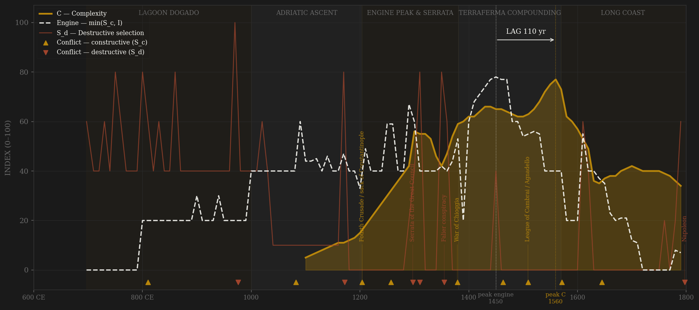
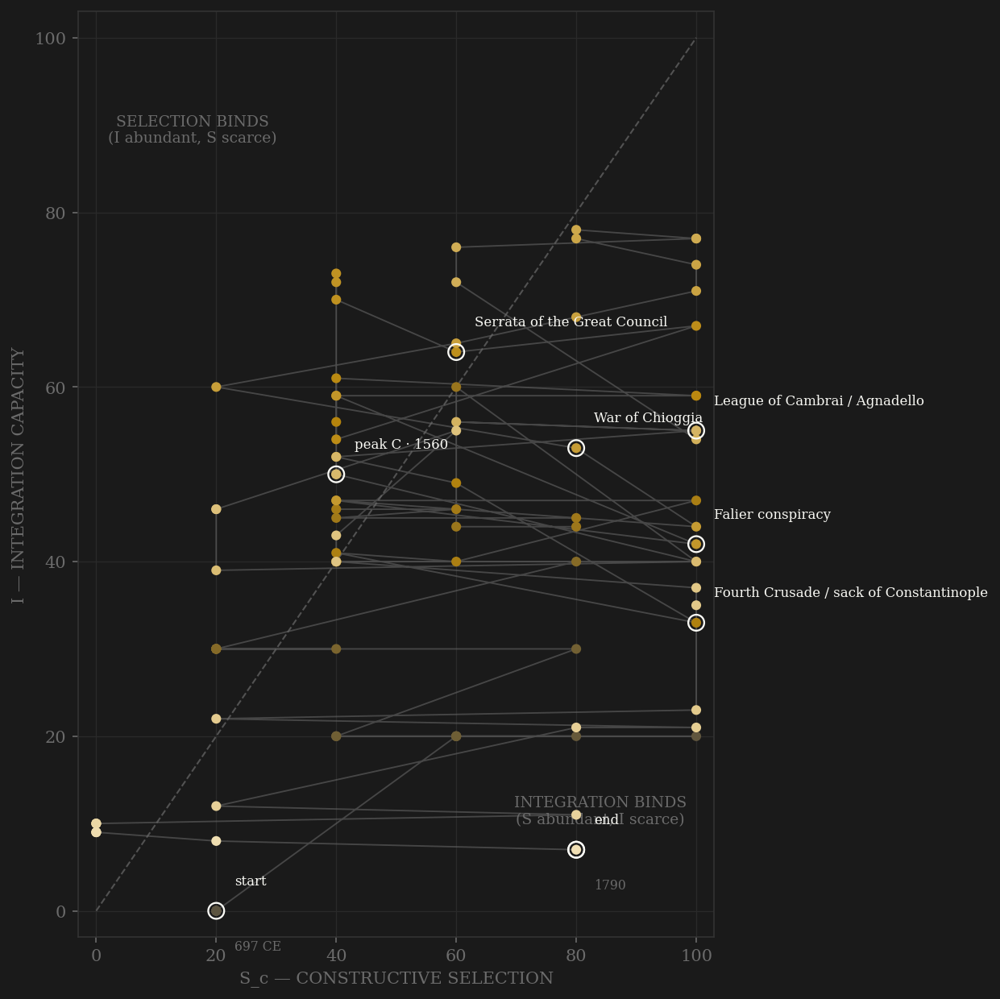

Venice is the longest single-polity run in the study — eleven hundred years under one constitutional continuity — and the only premodern state whose fiscal stress is measured by a live market. The prestiti, forced loans traded on the Rialto from 1285, price every crisis in real time: yields spike to 27% in the war of Chioggia, 33% in the 1463 Ottoman war, 25% after Agnadello. Which peak counts as 'the engine' depends on its form, and Venice is where the two forms split visibly: the multiplicative S×I engine peaks in the 1290s — the exact decade of the Serrata, when the Great Council closed itself to new families and capped constructive selection by statute. The Liebig engine min(S_c,I), the form the data prefers and the standard used across this study, peaks in the 1450s, when integration reached up to meet what contest remained. Complexity peaks in the 1560s either way: the Arsenal at 4,200 workers, 166,000 people. After 1600 the sea trade goes Atlantic, measured integration thins, and entropy climbs monotonically to the end: Napoleon found a state that had been coasting for two centuries and blew on it.

The trajectory spends its first three centuries pinned to the I=0 wall — a violent lagoon township where most early doges were deposed, blinded, or killed, all selection and no reach. The climb starts with the Adriatic and the Crusade windfalls, and the path crosses the diagonal around the thirteenth century as the convoy system and the prestiti market industrialize coordination. The Serrata caps selection at the very moment integration is still rising — from 1297 the trajectory moves almost purely vertically, then drifts left along the top: the coasting quadrant again, held longer than any polity in the sample. Venice's fall never shows the S_d catastrophe of a Tang or a Rome; the path just slides down the integration axis as the Mediterranean stops being the center of the world.
Coded by locus and target, never by outcome. Venice's ledger is the mirror image of most polities': external contest nearly continuous — four wars with Genoa, seven with the Ottomans, the League of Cambrai uniting Europe against one city — while internal violence, after the chaotic early dogado, almost vanishes. Three conspiracies in five centuries (Bocconio 1300, Tiepolo 1310, Falier 1355), each strangled in weeks. That is the Venice signature: the Serrata bought near-zero S_d at the price of frozen S_c. The framework prices both sides of that trade.
| YEAR | CONFLICT | CODE | CODING RATIONALE |
|---|---|---|---|
| 810 CE | Pepin's invasion repelled | Sc | External Frankish assault on the lagoon; the founding external test |
| 976 CE | Rising against Doge Candiano | Sd | Doge burned in his palace; late dogado internal violence |
| 1082 | Byzantine chrysobull (Norman wars) | Sc | External war against the Normans; paid in trading privileges — rivalry converted to reach |
| 1172 | Assassination of Doge Michiel | Sd | Last major internal political killing; constitutional reform followed |
| 1204 | Fourth Crusade / sack of Constantinople | Sc | External venture; three-eighths of an empire's trade seized — coded by locus, morality not the axis |
| 1257 | First Genoese war | Sc | Peer commercial rivalry begins; four wars over 120 years |
| 1297 | Serrata of the Great Council | Sd | No blood drawn: the closure of political contest itself — S_c capped by statute; the engine's peak decade |
| 1310 | Tiepolo conspiracy | Sd | Failed coup; Council of Ten created — the immune system |
| 1355 | Falier conspiracy | Sd | The doge himself beheaded within weeks; last internal spasm for centuries |
| 1379 | War of Chioggia | Sc | Genoa inside the lagoon — near-death external test; prestiti at 27% date it precisely |
| 1463 | First Ottoman war | Sc | Series maximum fiscal stress: yields hit 33% — the market says this, not the chronicle |
| 1509 | League of Cambrai / Agnadello | Sc | All of Europe against one city; terraferma lost and regained; yields 25% |
| 1571 | Lepanto / loss of Cyprus | Sc | Victory in the battle, loss of the island — external pressure now chronic |
| 1645 | War of Candia begins | Sc | 25-year siege of Crete; the long Ottoman grind |
| 1797 | Napoleon | Sd | Core penetration without battle: the Great Council votes itself out of existence at gunpoint |
| COMPONENT | GRADE | BASIS |
|---|---|---|
| S_c — Constructive | ○ scholar-coded | War chronology 0–3 per decade from Lane 1973, Norwich 1982; Puga & Trefler contestability axis (Serrata) |
| S_d — Destructive | ○ scholar-coded | Early dogado violence, 976 rising, Michiel 1172, three conspiracies, then near-zero — the Venice signature |
| I — Integration | ◐ measured | Galley fleet, spice imports, glass exports, mint output, prestiti market depth; post-1600 coverage thins to glass exports (flagged) |
| C — Complexity | ◐ measured | Arsenal workforce 1104–1797, Malanima/Alfani GDPpc (level-step at 1300 flagged), Bairoch/Chandler population; NaN before 1100 (≥2-component rule) |
| E — Entropy | ● market-measured | Prestiti implied yields 1285–1600 — a live market pricing fiscal stress; Levant insurance premia 1720–97 |
110 decade rows built by scripts/build_venice_sicre.py from Deep History series + hand-coded chronology; audit trail in components_audit.csv. Known artifacts flagged inline: Malanima GDPpc level-step at 1300; thin measured-I after 1600; no C before 1100. Engine-form sensitivity worth knowing: min(S_c,I) peaks 1450s (lag +110, PASS); the multiplicative S×I form peaks in the Serrata decade 1290s (lag ~270) — the divergence itself is evidence for which form is right. Rebuild: build_venice_sicre.py, then polity_report.py --slug venice